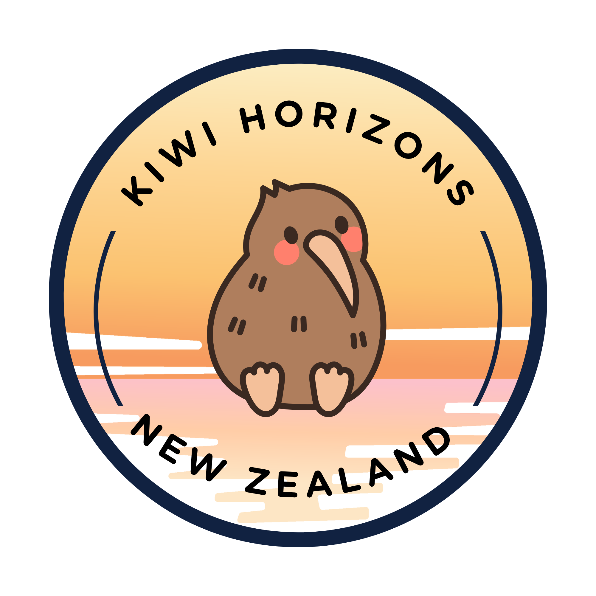

Kia Ora! Welcome to Kiwi Horizons! At Kiwi horizons we are all about helping you find the hidden gems in Aeteora. If you a spend all day in musems learning about the history, or love spending days having snowball fights and sking, or spending all day at the beach....maybe not that one. We are here for all kinds of trips. A trip truley about you. Your journey starts here. We cant wait to help you discover what is waiting over the horizon.

Kiwi horizions X Save the kiwi
Our mission is to give kiwi a future — and you can be part of it.
By donating, you help fund predator control, breeding programs, safe habitats,
and rescue efforts that directly protect these vulnerable birds. Every
contribution brings us one step closer to a world where kiwi no longer face
extinction.
Every week, around 20 kiwi birds are killed, leaving only 68,000 left in declining
numbers. But there is hope. Thanks teh dedication and conservation efforts from
the support of the people who care. 454 kiwi eggs have been hatched, and 333 kiwi
birds have been recollected to their safe, forever homes where they can thrive.
Save the Kiwi Mission is about giving the kiwis a future, and you can help. By
donating, you help fund predator control, breeding programs, safe habbitatdes and
more. Every contribution brings us one step closer to a world where kiwis no longer
face extinction. CLICK HERE TO DONATE